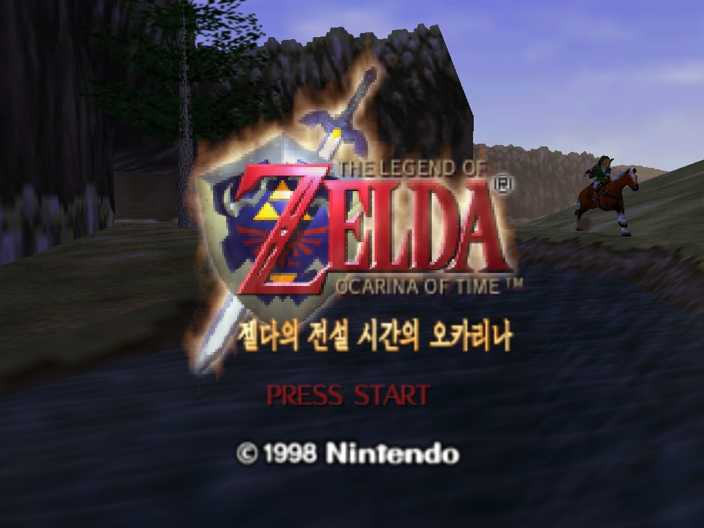
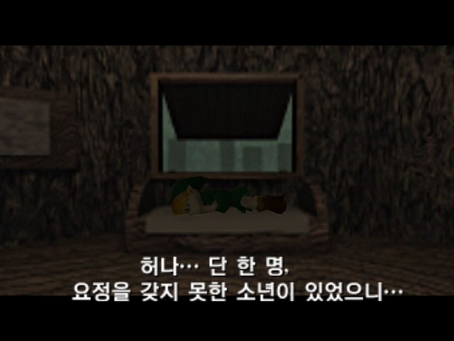
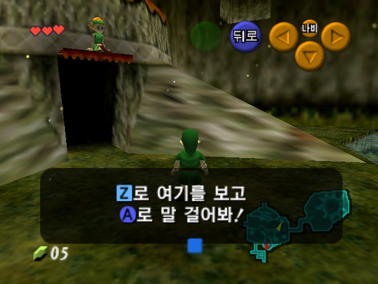

NINTENDO 64 / KOREAN PATCH
젤다의 전설: 시간의 오카리나
- 상태
- 배포 중
- 패치 배포일
- 2026.01.10
- 플랫폼
- Nintendo 64
01 / GAME INTRODUCTION
게임 소개
HYRULE / THE HERO OF TIME / NINTENDO 64
소년은 시간의 문을 연다
코키리 숲에서 자란 링크는 데크 나무의 부름을 받고 숲 밖의 세계로 향한다. 하이랄 성에서 젤다 공주와 만나 성지를 노리는 가논돌프의 야망을 알게 된 링크는 시간의 문을 열 열쇠를 모으는 여정을 시작한다.
그러나 성지의 문이 열린 순간 세계의 운명은 크게 뒤틀린다. 어린 시절과 7년 뒤의 세계를 오가며, 링크는 시간의 용사로서 하이랄을 되찾기 위한 모험에 나선다.

가논돌프를 쓰러뜨린 뒤 젤다는 링크를 원래의 어린 시절로 돌려보냅니다.
이 귀환으로 이어지는 어린 시절 분기가 무쥬라의 가면과 황혼의 공주로 연결됩니다.
링크는 헤어진 친구를 찾아 하이랄을 떠나고, 테르미나에서 새로운 사건에 휘말립니다.
※ 무쥬라의 가면은 ‘용사 패배’ 분기가 아니라, 시간의 오카리나에서 용사가 승리한 뒤 이어지는 어린 시절 분기의 이야기입니다.
02 / OVERVIEW
개요
젤다의 전설: 시간의 오카리나는 1998년 11월 21일 일본에서 발매된 Nintendo 64용 액션 어드벤처이자 젤다 시리즈 최초의 3D 작품입니다. 예전 한국어화는 젤다 OoT팀에서 진행했고, 저도 당시 팀의 일원으로 참여했습니다. 이번에는 그때의 경험을 바탕으로 일본판 1.1 / Rev 1 ROM을 기준으로 처음부터 다시 손봤습니다.
예전 버전은 북미판과 일본판이 섞여 있었지만, 이번 패치는 일본어판을 100% 기준으로 다시 번역했습니다. 지명과 아이템명은 최근 젤다 시리즈에서 쓰는 표기를 참고했고, 코키리족이 성인 링크를 부르는 호칭처럼 인물 관계가 드러나는 부분도 문맥에 맞게 고쳤습니다.
남아 있던 미번역 그래픽도 모두 찾아 수정했고, 타이틀·아이템·맵 등 주요 화면도 한국어로 바꿨습니다. 한글 키보드까지 새로 만들지는 않았고, 이름 입력 화면의 あ, か를 각각 링, 크로 바꿔 기본 이름 링크를 입력할 수 있게 했습니다.
시간의 오카리나는 한마루라는 이름으로 활동하기 전부터 인연이 깊은 작품입니다. 당시에는 Dice님을 중심으로 젤다 OoT팀이 꾸려졌고, 생각보다 많은 분들이 번역과 기술 작업에 힘을 보태 주셨습니다. 별도의 홈페이지와 버그 리포팅 페이지까지 만들 정도로 규모가 커졌고, 저 역시 당시 nowjuni라는 닉네임으로 참여하면서 본격적으로 한국어화 작업을 경험했습니다. 시간이 흐른 뒤 2022년에는 열정페이님과 함께 기존 패치를 다시 손보려 했지만 여러 사정으로 끝까지 이어 가지 못했습니다.
처음 작업하던 시절에는 N64 관련 해킹 자료가 지금처럼 정리되어 있지 않아, 브라질 쪽에서 공개된 자료를 참고해 필요한 툴을 직접 만들고 데이터를 삽입하며 패치를 완성했습니다. 약 1~2년에 걸쳐 작업과 검수를 이어 갔고, 2002년 무렵 처음 배포한 뒤 그래픽과 오역을 다시 손봐 2006년에도 업데이트했습니다. 지금 돌아보면 기술적으로도 번역적으로도 아쉬운 점은 있었지만, 당시 할 수 있는 범위 안에서는 정말 많은 것을 쏟아부었던 작업이었습니다.
그러다 Zelda Reverse Engineering Team의 디컴파일 프로젝트를 접하면서 다시 제대로 만들어 보고 싶다는 생각이 들었습니다. 2026년에 작업을 다시 시작해 구현에 약 2주, 전체 문장과 화면을 다시 확인하는 데 약 2주가 더 걸렸고, 한 달 정도 만에 지금의 재작업판을 완성했습니다. 예전 OoT팀에서 함께했던 분들과 ZRET의 작업이 없었다면 다시 여기까지 오기 어려웠을 겁니다.
무엇보다 시간의 오카리나는 제가 지금까지 한국어화 작업을 계속할 수 있게 만든 계기 같은 작품입니다. 20년이 훌쩍 지난 뒤에 다시 돌아와, 예전에는 남겨 둘 수밖에 없었던 아쉬움까지 하나씩 정리하고 이 작업을 다시 마무리할 수 있었다는 점이 개인적으로 무척 뜻깊고 뿌듯합니다. 오래전 시작했던 큰 숙제 하나를 이제야 제대로 끝낸 기분입니다. 원본 게임 데이터는 배포 파일에 포함하지 않았습니다.
03 / FEATURES
특징
예전의 혼합 번역을 걷어내고 일본어판 원문을 기준으로 전체 대사를 다시 번역했습니다.
지명과 아이템명은 최근 젤다 시리즈에서 쓰는 표기를 참고해 자연스럽게 맞췄습니다.
남아 있던 일본어 그래픽을 찾아 수정하고 주요 UI·맵·아이템 화면도 한국어로 바꿨습니다.
한글 키보드 대신 あ → 링, か → 크로 바꿔 기본 이름 ‘링크’를 입력할 수 있게 했습니다.



04 / DOWNLOAD
다운로드
STARTUP LOGO OPTION
현대 컴보이 64 / Nintendo 64
이 패치는 두 가지 로고 버전을 함께 제공합니다. 한국어 번역과 게임 내용은 동일하며, 차이는 시작 시 표시되는 192×32 I8 로고뿐입니다.
현대 컴보이 64 버전
시작 화면의 본체 로고를 현대 컴보이 64 표기로 표시합니다.
Nintendo 64 버전
원본 Nintendo 64 시작 로고를 그대로 유지합니다.
다운로드 ZIP에는 두 버전이 함께 들어 있습니다. 압축을 푼 뒤 원하는 로고의 apply_hyundai_comboy64.bat 또는 apply_nintendo64.bat를 실행하면 됩니다.
04-A / RELEASE HISTORY
배포 이력
2026.01.08 → 2026.01.10
최신 배포본
- 최종 배포 버전을 v1.102로 갱신
- 마지막으로 확인된 보완 사항 반영
- 지원 원본 및 패치 후 파일 MD5 기준 유지
첫 업데이트
- 최초 배포 후 확인한 보완 사항 수정
- v1.1의 전체 한국어화 내용은 그대로 유지
신규 완성판 배포
- 일본어판 100% 기준으로 전체 재작업
- 남아 있던 미번역 그래픽 수정
- 한글 키보드는 미구현, 기본 이름 ‘링크’ 입력 지원
04-B / INSTALL GUIDE
패치 적용 방법
배포 ZIP 전체 압축 해제
Zelda_OOT_KO_v1.102_xdelta_windows.zip의 모든 파일을 한 폴더에 압축 해제합니다.
지원 일본판 Rev A ROM 준비
Zelda no Densetsu - Toki no Ocarina (Japan) (Rev A)의 BigEndian .z64 파일을 준비합니다.
원하는 시작 로고 버전 적용
Nintendo 64 버전은 apply_nintendo64.bat, 현대 컴보이 64 버전은 apply_hyundai_comboy64.bat를 실행합니다. 원본 ROM을 BAT 위로 드래그 앤 드롭해도 됩니다.
자동 해시 검증 후 완료
패처가 원본 MD5/SHA-256과 완성된 ROM의 MD5/SHA-256을 확인하고, 검증을 통과한 경우에만 최종 .z64 파일을 남깁니다.
Mupen / Project64 1.6 — 실행 및 플레이 확인
Nintendo 64 실기 — 테스트 완료
두 로고 버전은 시작 로고만 다르며 게임 내용은 동일합니다.
04-C / DISTRIBUTION LICENSE
배포 라이센스
파일 다운로드 전에 아래 사항을 반드시 확인 바랍니다.
- A.원칙적으로, 해당 기종의 원본 디스크 또는 카트리지를 보유한 분이 개인적으로만 이용한다는 전제 하에 본 한글패치 파일을 다운로드할 수 있습니다.
- B.상기 A항 조건에 해당하지 않는 분이 본 한글패치 파일을 다운로드하여 이용할 경우에 발생하는 모든 책임은 이용 당사자에게 있으며, 패치 제작자는 어떠한 책임도 지지 않습니다.
- C.본 한글패치 파일 자체를 제작자의 허가 없이 타 사이트에 재배포하지 말아 주시고, 재배포를 원하실 경우 패치원본 게시물의 링크를 공유해 주시기 바랍니다.(아카이빙 포함)
- D.본 게시물의 본문 글 일부 또는 전체를 무단으로 옮겨 작성하지 말아 주시기 바랍니다. 단, 타 사이트에서 발췌하거나 인용한 문구에 대해서는 예외로 합니다.
- E.본 한글패치 파일을 이용하여 금전적 이득을 취하는 모든 행위를 일절 금합니다. 해당 행위로 발생하는 모든 책임은 이용 당사자에게 있으며, 패치 제작자는 어떠한 책임도 지지 않습니다.(패치 파일 자체 및 패치 롬 파일 판매, 패치 롬 카트리지 제작 및 판매, 웹하드 등 상업적 사이트 업로드, 토렌트 사이트 공유 등)
- F.상기 C·D·E항의 금지 행위가 적발된 경우, 또는 본 한글패치 파일 공유로 인해 원저작자 및 유통사, 기관의 요청이 있을 경우 예고 없이 게시물이 비공개 처리될 수 있으며, 향후 작업 예정인 작품의 한글패치 파일도 공유하지 않을 수 있습니다.
04-D / RELEASE
패치 다운로드
현재 최신 배포본은 v1.102입니다. 2026.08.23 패키지 갱신으로 Nintendo 64 / 현대 컴보이 64 시작 로고를 선택할 수 있으며, 번역과 게임 내용은 기존 v1.102와 동일합니다.
Zelda no Densetsu - Toki no Ocarina (Japan) (Rev A)MD51BF5F42B98C3E97948F01155F12E2D88SHA-256ADE86E53AD21CD69D751E019547DDBF413CB78DBD34F07ADE5F1DFBBD8904B5C오류나 번역 문제를 발견하셨나요?
오탈자, 미번역, 문맥이 어색한 대사, 글자 깨짐, 화면 밖으로 넘어가는 문장, 진행 중 프리징 등 플레이 중 발견한 문제는 한식구 검수/제보/피드백 게시판에 남겨 주세요. 가능하다면 발생 장면과 스크린샷을 함께 첨부해 주시면 확인에 도움이 됩니다.
검수/제보/피드백 게시판 ↗Zelda_OOT_KO_v1.102_xdelta_windows.zip
- VERSION
- 1.102
- RELEASE
- 2026.01.10
- PACKAGE
- 2026.08.23
- FORMAT
- ONE-CLICK XDELTA
04E259A924395CC917BDE32E1C4754FB1F6D709DA8483BB00F3A2BDF3978546BD4091F8260A0E1AA5EB8681F1021C314EC21E96A884965E68926AC788C7A6DE504-E / CREDITS